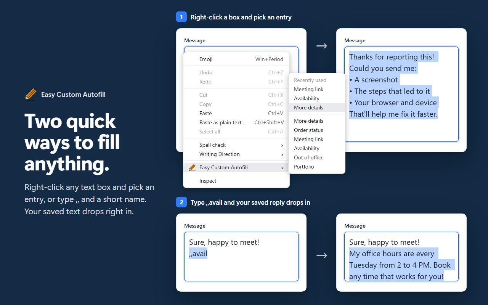
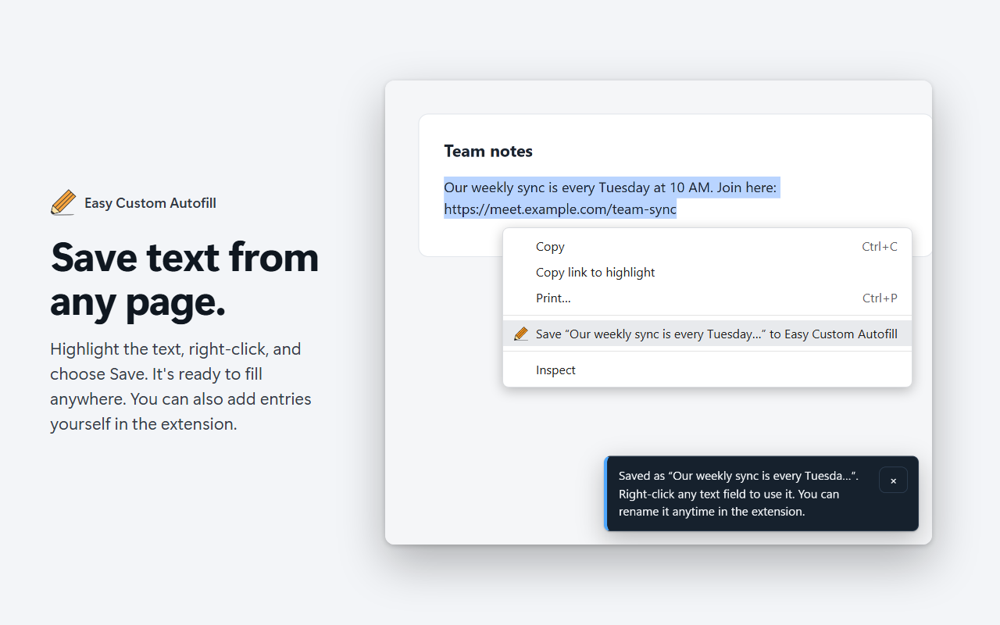
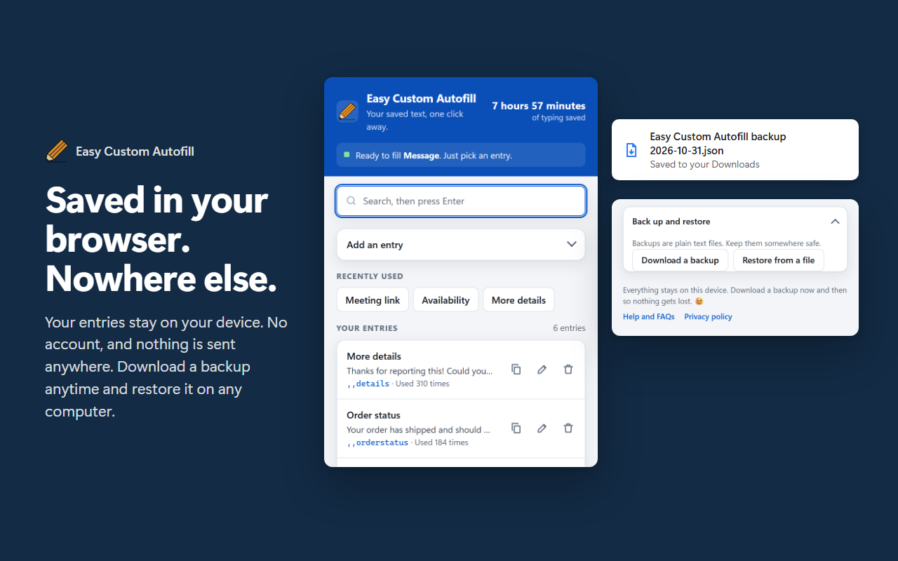
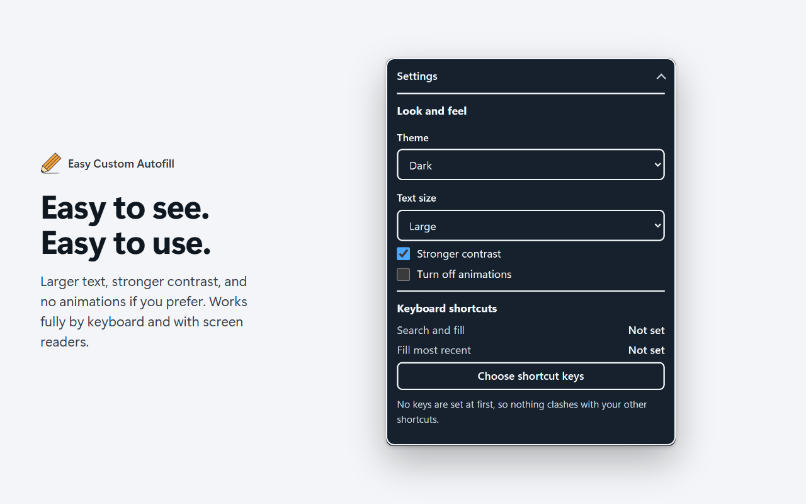
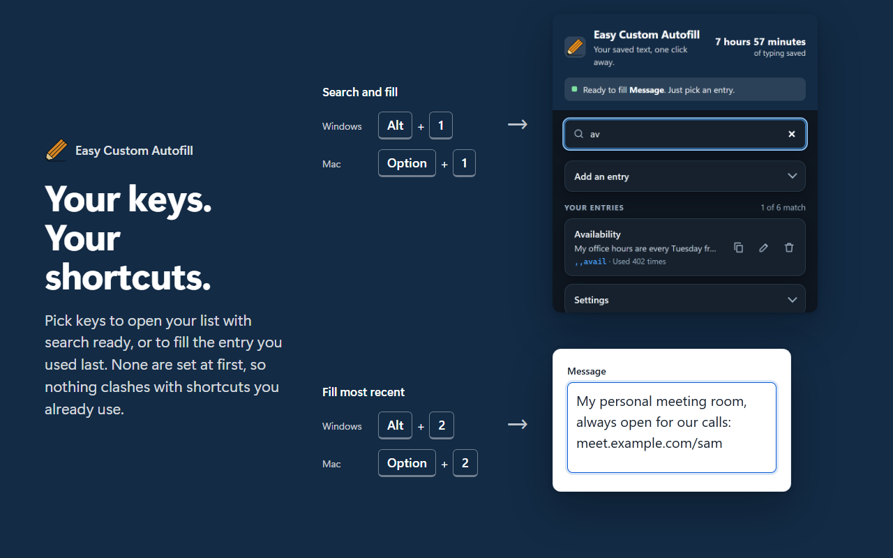

Easy Custom Autofill
Save text you type often, then fill it into any text box with a right-click or a few keys. Everything stays in your browser.
- Right-click to fillPick an entry from the menu. The ones you used last are at the top.
- Type to fillType
,,and a short name, and your saved text appears. Optional. - Highlight to saveSelect text on any page, right-click, and choose Save.
- Stays on your deviceNo account, no tracking, nothing sent anywhere. Back up anytime.
See it in action




